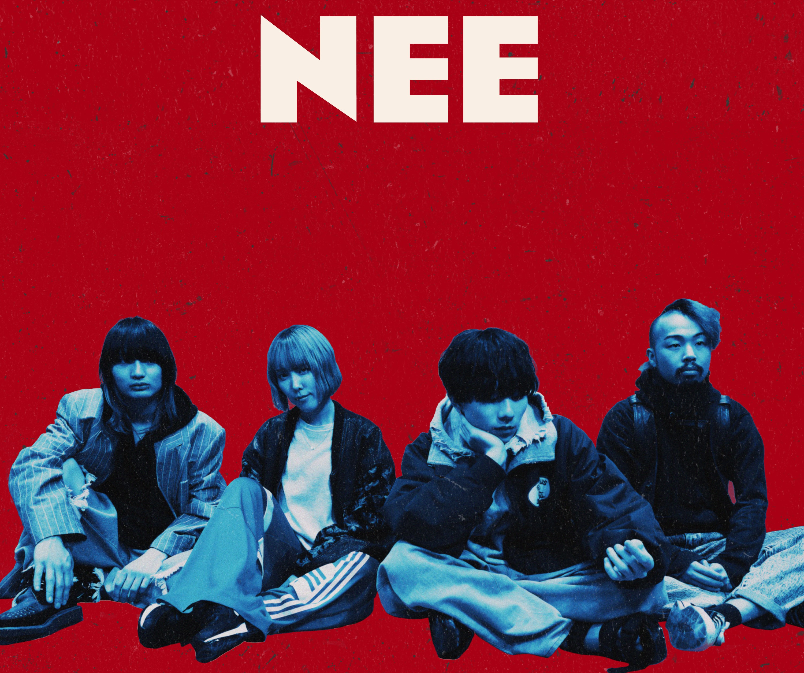

|  |
NEEロックバンドくぅ(Gt&Vo) / 夕日(Gt) / かほ(Ba) / 大樹(Dr)で構成される自称"エキゾチックバンド"。
|
|---|
Pick Up
個人的に特に好きな楽曲をピックアップします
一揆少なからず闇を抱えて生きている現代人に向け、自分の中にある正義と
|
|
第一次世界独特で迫力と中毒性のある歌詞やMVが人気を集めている。
|
|
不革命前夜NEEが知られるきっかけとなった曲。疾走感がありつつも不穏・悲しげな
|
|
ポップスターくぅが生前最後に全国を回った"NEE 7th TOUR"にて披露された。
|